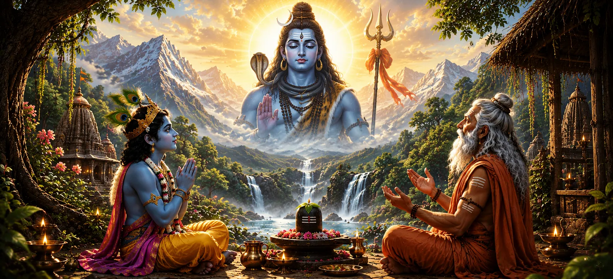

भगवान शिव की महिमा
पिछले अध्याय में प्रस्तुत भक्ति के अनुशासन पर आधारित, उमा संहिता का अध्याय 3 भगवान महादेव की उत्कृष्ट महिमा, लौकिक सर्वोच्चता और पारलौकिक सार को उजागर करता है। यह अध्याय स्थापित करता है कि क्यों शिव सभी आध्यात्मिक खोजों के अंतिम लक्ष्य के रूप में खड़े हैं, जो अव्यक्त पूर्ण वास्तविकता और ब्रह्मांड के दयालु रक्षक दोनों के रूप में उनके दोहरे पहलू को प्रकट करते हैं।
पाठ में बताया गया है कि कैसे अकेले शिव ही अस्तित्व के हर आयाम में व्याप्त हैं। यद्यपि वह इंद्रियों, मन और वाणी की पहुंच से परे है, फिर भी वह अपनी असीम कृपा से स्वयं को सच्चे भक्तों के लिए सुलभ बनाता है। सभी देवताओं, ज्ञान और ब्रह्मांडीय कानून के स्रोत के रूप में, महादेव सांसारिकता से अछूते रहते हुए शाश्वत व्यवस्था को बनाए रखते हैं।
इस अध्याय में उजागर किए गए शिव के अतुलनीय गुणों पर विचार करने से, भक्त का विश्वास अटल अहसास में गहरा हो जाता है, जिससे मुक्ति और परमात्मा के साथ अंतिम मिलन का रास्ता साफ हो जाता है।
अध्याय 3 एक नज़र में
पवित्र प्रसंग
शिव पुराण में उमा संहिता का तीसरा अध्याय।
लौकिक सर्वोच्चता
शिव को परब्रह्मण के रूप में खोजता है, जो सभी अस्तित्व के पीछे का अंतिम कारण है।
देवों के स्वामी
महादेव को सर्वोच्च मूल के रूप में प्रतिष्ठित किया गया है जिनसे सभी देवता शक्ति प्राप्त करते हैं।
शिव और शक्ति
भगवान शिव और देवी उमा के बीच शाश्वत, अविभाज्य बंधन को उजागर करता है।
दयालु अनुग्रह
सभी प्राणियों की रक्षा और मुक्ति के लिए शिव की तीव्र इच्छा को प्रकट करता है।
आध्यात्मिक उन्नति
शिव की महिमा का श्रवण पिछले पापों और भ्रम को नष्ट कर देता है।
इस अध्याय की सामग्री
- 01 शिव उत्कृष्ट परब्रह्म के रूप में →
- 02 तीन ब्रह्मांडीय कार्य और शिव →
- 03 शिव और शक्ति की अविभाज्य एकता →
- 04 सभी दिव्य प्राणियों पर संप्रभुता →
- 05 महादेव दया के सागर हैं →
- 06 ईश्वरीय कृपा का प्रकटीकरण (अनुग्रह) →
- 07 शिव के माध्यम से सांसारिक माया को पार करना →
- 08 शिव के लौकिक स्वरूप का प्रतीकवाद →
- 09 शिव महिमा को पढ़ने और सुनने का गुण →
- 10 अविभाज्य महिमा पर निष्कर्ष →
शिव उत्कृष्ट परब्रह्म के रूप में
अध्याय 3 की शुरुआत भगवान शिव के सच्चे सत्तामूलक स्वरूप की उत्कृष्ट उद्घोषणा से होती है। उन्हें सर्वोच्च परब्रह्म के रूप में परिभाषित किया गया है - जन्महीन, मृत्युहीन और निराकार पूर्ण वास्तविकता जो सारी सृष्टि का आधार है। समय, प्रकाश या तत्वों की अभिव्यक्ति से पहले, शिव शाश्वत स्व-प्रकाशमान शांति में मौजूद थे।
शास्त्र बताते हैं कि शिव सत-चित-आनंद (अस्तित्व-चेतना-आनंद) दोनों हैं। यद्यपि वह मानवीय समझ से परे है और तीन गुणों (सत्व, रजस और तमस) से अप्रभावित है, फिर भी वह बंधी हुई आत्माओं की मुक्ति की सुविधा के लिए करुणावश गुणों को अपनाता है।
शिव को अस्तित्व के अंतिम आधार के रूप में पहचानने से साधक को क्षणिक सांसारिक वस्तुओं के प्रति लगाव से मुक्ति मिलती है और मन शाश्वत सत्य में स्थापित होता है।
तीन ब्रह्मांडीय कार्य और शिव
पाठ में बताया गया है कि कैसे ब्रह्मांडीय त्रिमूर्ति - ब्रह्मा निर्माता, विष्णु संरक्षक, और रुद्र विघ्नकर्ता - परमेश्वर शिव के प्राथमिक आवेग से उत्पन्न होते हैं। जबकि ये देवता ब्रह्मांड के चक्रों का प्रबंधन करते हैं, शिव उनके कार्यों का मार्गदर्शन करने वाले उत्कृष्ट नियंत्रक बने हुए हैं।
शिव रजस के माध्यम से सृष्टि को प्रक्षेपित करते हैं, सत्व के माध्यम से इसका पालन करते हैं, और तमस के माध्यम से इसे अपने अंदर समाहित कर लेते हैं। जब ब्रह्मांडीय विघटन होता है, तो सब कुछ अपने अव्यक्त रूप में लौट आता है, केवल एक निर्बाध दिव्य चक्र में फिर से प्रक्षेपित होने के लिए।
यह महसूस करके कि शिव सभी विश्व गतिविधियों का स्रोत और गंतव्य हैं, भक्त हर ब्रह्मांडीय बदलाव को महादेव के दिव्य खेल (लीला) की अभिव्यक्ति के रूप में देखता है।
शिव और शक्ति की अविभाज्य एकता
इस अध्याय का एक प्रमुख आकर्षण शिव और देवी उमा (शक्ति) के बीच संबंधों का दार्शनिक उपचार है। उन्हें दो अलग-अलग संस्थाओं के रूप में वर्णित नहीं किया गया है, बल्कि चेतना और उसकी अंतर्निहित शक्ति के रूप में वर्णित किया गया है - जैसे आग और गर्मी, या शब्द और उनके अर्थ।
शक्ति उस गतिज ऊर्जा का प्रतिनिधित्व करती है जो सृष्टि को गति देती है, जबकि शिव शाश्वत, अचल चेतना है जो इसे सहारा देती है। शक्ति के बिना शिव अव्यक्त रहते हैं; शिव के बिना शक्ति का कोई आधार नहीं है।
इस अद्वैत मिलन (अर्धनारीश्वर सिद्धांत) को समझने से साधकों को प्रकृति और आत्मा का समान रूप से सम्मान करने, अस्तित्व के सभी पहलुओं में दिव्यता खोजने में मदद मिलती है।
सभी दिव्य प्राणियों पर संप्रभुता
अध्याय 3 में शिव की उपाधि महादेव-देवों के देव - पर जोर दिया गया है। दिव्य प्राणी, ऋषि, परियोजना-निर्माता और दिशाओं के संरक्षक लगातार उनके चरणों में श्रद्धांजलि अर्पित करते हैं, यह जानते हुए कि उनकी शक्तियाँ और सम्मान पूरी तरह से उनकी कृपा से प्राप्त होते हैं।
जब भी ब्रह्मांडीय व्यवस्था को नकारात्मक शक्तियों से खतरा होता है, तो देवता महादेव की शरण लेते हैं। मात्र एक नज़र या इशारे से, शिव संतुलन स्थापित करते हैं, धर्मियों की रक्षा करते हैं और लौकिक धर्म को बनाए रखते हैं।
फिर भी, अपनी बेजोड़ संप्रभुता के बावजूद, भगवान शिव कैलासा पर्वत पर पूरी सादगी से रहते हैं, जो सभी प्राणियों के लिए वैराग्य और आत्मनिर्भरता का उदाहरण है।
महादेव दया के सागर हैं
जबकि शिव की महिमा अनंत है, उनकी करुणा (करुणा) को उनका सबसे प्रिय गुण बताया गया है। उन्हें आशुतोष के रूप में जाना जाता है - जो शुद्ध हृदय से अर्पित किए गए जल या बिल्व पत्र जैसे मामूली प्रसाद से भी आसानी से प्रसन्न हो जाते हैं।
वह एक भक्त को सामाजिक स्थिति, धन या विद्वता से नहीं, बल्कि पूरी तरह से ईमानदारी से मापते हैं। संतों, राजाओं, बहिष्कृतों और यहां तक कि असुरों ने भी एकनिष्ठ भक्ति के माध्यम से उनका अनुग्रह अर्जित किया है।
यह असीमित पहुंच प्रत्येक आध्यात्मिक साधक को आश्वस्त करती है कि पिछली गलतियों के बावजूद, शिव का क्षमाशील आश्रय हमेशा खुला है।
ईश्वरीय कृपा का प्रकटीकरण (अनुग्रह)
पाठ बताता है कि भगवान शिव की पांच दिव्य गतिविधियों में से, उनकी कृपा का कार्य (अनुग्रह) मानवता के लिए सर्वोपरि है। जबकि सृजन और विघटन ब्रह्मांडीय चक्र से संबंधित हैं, अनुग्रह सीधे व्यक्तिगत आत्मा की मुक्ति को प्रभावित करता है।
जब शिव की कृपा जीव पर होती है, तो अज्ञान (अविद्या) का पर्दा हटने लगता है। मन स्वाभाविक रूप से क्षणभंगुर सांसारिक सुखों से दूर हो जाता है और आध्यात्मिक सत्य की तलाश करता है।
यह अनुग्रह केवल बौद्धिक प्रयास से अर्जित नहीं किया जाता है, बल्कि विनम्रता, प्रार्थना और बिना शर्त समर्पण के माध्यम से प्राप्त किया जाता है।
शिव के माध्यम से सांसारिक माया को पार करना
माया वह दैवीय मायावी शक्ति है जो संसार को ईश्वर से अलग दिखाती है। उपमन्यु ने खुलासा किया कि चूंकि माया पूरी तरह से शिव के अधीन है, इसलिए शिव पर ध्यान करना भ्रम से परे जाने का सबसे सीधा तरीका है।
जिस तरह प्रकाश स्वाभाविक रूप से अंधेरे को दूर कर देता है, महादेव की निरंतर जागरूकता भौतिक शरीर और अहंकार के साथ गलत पहचान को खत्म कर देती है।
जब कोई भक्त माया के पर्दे को तोड़ता है, तो उसे ब्रह्मांड के हर कण में भगवान शिव की उपस्थिति का एहसास होता है।
शिव के लौकिक स्वरूप का प्रतीकवाद
अध्याय 3 भगवान शिव की प्रतिमा के पीछे के आध्यात्मिक महत्व को स्पष्ट करता है। उनका अर्धचंद्र समय और मन पर प्रभुत्व का प्रतिनिधित्व करता है; तीसरी आँख आध्यात्मिक ज्ञान और इच्छा के विनाश का प्रतीक है; और पवित्र नदी गंगा दिव्य ज्ञान के शाश्वत प्रवाह का प्रतीक है।
उनके शरीर पर लगी पवित्र राख (भस्म) साधकों को भौतिक संसार की नश्वरता की याद दिलाती है, जबकि त्रिशूल (त्रिशूल) तीन लोकों और तीन गुणों पर वर्चस्व का प्रतिनिधित्व करता है।
इन प्रतीकों को समझना दृश्य चिंतन को वास्तविकता की परम प्रकृति पर गहन वेदांतिक ध्यान में बदल देता है।
शिव महिमा को पढ़ने और सुनने का गुण
अध्याय शिव की दिव्य महिमाओं का अध्ययन, पाठ या श्रवण से प्राप्त आध्यात्मिक योग्यता (पुण्य) पर प्रकाश डालता है। महादेव के गुणों को सुनने से मन संचित नकारात्मक संस्कारों से शुद्ध होता है और शांति मिलती है।
यह घोषित किया गया है कि जो कोई भी सच्ची श्रद्धा के साथ अध्याय 3 पर चिंतन करता है उसे मानसिक स्पष्टता, चिंता से मुक्ति और दैनिक जीवन में सुरक्षात्मक आशीर्वाद प्राप्त होता है।
शिव की महानता का नियमित चिंतन बुद्धि को ध्यान और आध्यात्मिक जागृति की उच्च अवस्थाओं के लिए तैयार करता है।
अविभाज्य महिमा पर निष्कर्ष
अध्याय 3 यह पुष्टि करते हुए समाप्त होता है कि भगवान शिव की सच्ची महिमा दिव्य प्राणियों या प्राचीन ग्रंथों द्वारा भी पूर्ण अभिव्यक्ति से परे है। फिर भी, अपनी क्षमता के अनुसार उनकी महानता का वर्णन करना महादेव को प्रसन्न करने वाली भक्ति का सर्वोच्च कार्य है।
शिव की अनंत महिमा और दयालु प्रकृति को स्थापित करने के बाद, यह कथन उमा संहिता में पालन किए जाने वाले कर्म कानूनों, नैतिक कर्तव्यों और लौकिक व्यवस्था को समझने के लिए आदर्श दार्शनिक आधार स्थापित करता है।
अध्याय 3 से छह आध्यात्मिक पाठ
शिव परम कारण हैं
सभी ब्रह्मांड, समय और जीवन महादेव से उत्पन्न होते हैं और उन्हीं में विलीन हो जाते हैं।
ऊर्जा और चेतना की एकता
शिव और शक्ति स्थिर जागरूकता और सक्रिय शक्ति के रूप में अटूट रूप से बंधे हुए हैं।
सादगी आशुतोष को प्रसन्न करती है
शिव के लिए भव्य आडंबर से अधिक शुद्ध प्रेम और विनम्र अर्पण का अर्थ है।
अनुग्रह भ्रम पर विजय प्राप्त करता है
शिव की कृपा आत्मा को माया के बंधन से मुक्त करती है।
कार्रवाई में टुकड़ी
सृष्टि के स्वामी होते हुए भी, शिव कैलास पर पूरी तरह से अनासक्त रहते हैं।
स्मरण द्वारा शुद्धि
शिव महिमा सुनने से मानसिक विकार दूर हो जाते हैं और शांति मिलती है।
आध्यात्मिक चिंतन
अध्याय 3 हमें याद दिलाता है कि आध्यात्मिक भक्ति दिव्य प्रकृति को समझने पर आधारित है। जब हम भगवान शिव को न केवल एक स्थानीय देवता के रूप में, बल्कि प्रत्येक परमाणु में सांस लेने वाली ब्रह्मांडीय चेतना के रूप में समझते हैं, तो हमारा दैनिक अभ्यास अनुष्ठान दायित्व से आनंदमय आराधना में बदल जाता है। महादेव की असीम शक्ति और सौम्य दया को पहचानने से हमें आंतरिक संतुलन के साथ जीवन की चुनौतियों का सामना करने का अटूट साहस मिलता है।
अध्याय 3 को दैनिक जीवन में लाना
इस अध्याय की शिक्षाएँ व्यावहारिक आध्यात्मिक आदतों को प्रेरित कर सकती हैं। शिव के अनासक्त लेकिन दयालु स्वभाव पर चिंतन हमें परिणामों के प्रति विषाक्त भावनात्मक जुड़ाव से बचते हुए प्रेम के साथ अपने कर्तव्यों को पूरा करने के लिए प्रोत्साहित करता है।
यह याद रखने से कि महादेव धन से अधिक शुद्ध इरादे को महत्व देते हैं, हमें पूजा में विनम्रता और दूसरों के प्रति दयालुता विकसित करने में मदद मिलती है। जब व्यक्तिगत समस्याएं भारी लगने लगती हैं तो शिव के ब्रह्मांडीय रूप को याद करने के लिए प्रतिदिन कुछ क्षण निकालने से परिप्रेक्ष्य मिलता है।
दैनिक निर्णयों में शिव (चेतना) और शक्ति (कार्य) दोनों का सम्मान करके, हम आध्यात्मिक चिंतन और सक्रिय जिम्मेदारी के बीच संतुलन बनाए रखते हैं।
प्रमुख नाम और विचार
सर्वोच्च, अव्यक्त, पूर्ण चेतना।
शिव विशेषण का अर्थ है "वह जो आसानी से प्रसन्न हो जाता है।"
दैवीय कृपा जो मुक्ति और आध्यात्मिक जागृति प्रदान करती है।
भगवान की गतिशील ब्रह्मांडीय शक्ति देवी उमा के रूप में प्रकट हुई।
शिव का त्रिशूल गुणों पर नियंत्रण और सृजन, सुरक्षा, विनाश का प्रतिनिधित्व करता है।
पवित्र राख को वैराग्य और परम वास्तविकता के प्रतीक के रूप में पहना जाता है।
अध्याय सारांश
उमा संहिता अध्याय 3 भगवान शिव की सर्वोच्च महानता, उत्कृष्ट प्रकृति और असीम दया का जश्न मनाता है। अध्याय शिव को परब्रह्मण के रूप में प्रकट करता है - सृजन, पालन और विघटन की अकारण उत्पत्ति। इसमें बताया गया है कि कैसे ब्रह्मा, विष्णु और रुद्र अपने दिव्य मार्गदर्शन के तहत ब्रह्मांडीय कार्य करते हैं। पाठ शिव और शक्ति के अविभाज्य मिलन पर प्रकाश डालता है, यह समझाते हुए कि चेतना और शक्ति एक हैं। महादेव और आशुतोष के रूप में जाने जाने वाले, शिव सभी ईमानदार साधकों को उनकी स्थिति की परवाह किए बिना त्वरित कृपा प्रदान करते हैं। उनके रूप का प्रतीकवाद - अर्धचंद्र, तीसरी आंख, त्रिशूल और पवित्र राख - को गहन वेदान्तिक सत्य के रूप में समझाया गया है। अध्याय का समापन शिव की दिव्य महिमाओं को पढ़ने और सुनने से होने वाली अत्यधिक आध्यात्मिक शुद्धि पर प्रकाश डालते हुए होता है।
अक्सर पूछे जाने वाले प्रश्न
① उमा संहिता अध्याय 3 का केंद्रीय फोकस क्या है?
केंद्रीय ध्यान सृजन, पालन और विघटन के अंतिम कारण के रूप में भगवान शिव की सर्वोच्च महानता, पारलौकिक प्रकृति और लौकिक गुण हैं।
② ब्रह्मांड के संबंध में भगवान शिव का वर्णन किस प्रकार किया गया है?
शिव को परब्रह्म के रूप में वर्णित किया गया है - समय, स्थान और गुणों से परे - जो पूरी तरह से अनासक्त रहते हुए ब्रह्मांडीय कार्यों को करने के लिए ब्रह्मा, विष्णु और रुद्र के रूप में प्रकट होते हैं।
③ शिव की महानता में पार्वती की क्या भूमिका है?
देवी पार्वती (उमा) उस गतिशील शक्ति (शक्ति) का प्रतिनिधित्व करती हैं जिसके माध्यम से भगवान शिव अपने ब्रह्मांडीय खेल को व्यक्त करते हैं, जो शिव और शक्ति की अविभाज्य एकता को प्रदर्शित करता है।
④ भगवान शिव को महादेव क्यों कहा जाता है?
उन्हें महादेव (महान देवता) नाम दिया गया है क्योंकि अन्य सभी देवता उनके सर्वोच्च, अकारण प्रकाश से अपना अधिकार, शक्ति और अस्तित्व प्राप्त करते हैं।
⑤ शिव माहात्म्य का ध्यान करने से क्या फल प्राप्त होता है?
महादेव की महिमा का चिंतन अज्ञानता को दूर करता है, आध्यात्मिक शक्ति प्रदान करता है, शांति प्रदान करता है और आत्मा को मुक्ति (मोक्ष) की ओर ले जाता है।
⑥ अध्याय 3 अध्याय 2 से कैसे जुड़ता है?
जबकि अध्याय 2 शिव भक्ति के व्यावहारिक अनुशासन और प्रतिज्ञाओं को रेखांकित करता है, अध्याय 3 भगवान की दार्शनिक पहचान और राजसी महिमा को प्रकट करता है जिनकी पूजा की जाती है।
"वह अंधकार से परे शाश्वत प्रकाश है, हर दिल के भीतर सर्वोच्च शांति है, और सारी सृष्टि का अंतिम आश्रय है।"
उमा संहिता के माध्यम से जारी रखें
अध्याय 3 भगवान शिव की अनंत ब्रह्मांडीय महानता को प्रकट करता है। महादेव की सर्वोच्च पहचान को समझने के बाद, यात्रा अस्तित्व को नियंत्रित करने वाले नैतिक आदेश, कर्म और लौकिक धर्म का पता लगाने के लिए अध्याय 4 में आगे बढ़ती है।